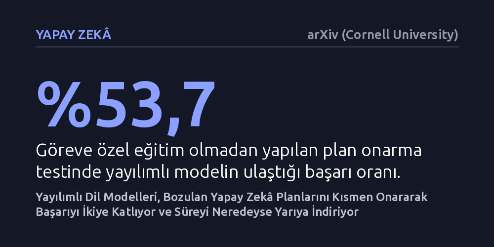

YAPAY-ZEKA · arXiv (Cornell University) · 2026-10-11
Araştırmacılar, otonom yapay zekâların beklenmedik engellerle karşılaştığında tüm planı baştan yazmak yerine sadece bozulan kısmı onarmasının etkisini inceledi. Geliştirilen yayılımlı model tabanlı yöntem, plan onarma başarısını klasik modellere göre ikiye katlarken plan üretim süresini yüzde 39 ila 46 kısalttı.
Yapay zekânın bir aksaklık karşısında her şeye sıfırdan başlamak yerine, tıpkı bir insan gibi yalnızca aksayan adımı yerinde düzelterek zamandan ve işlem gücünden tasarruf edebileceğini gösteriyor.

Günümüzde yapay zekâ sistemleri basit soru-cevap görevlerinin ötesine geçerek birden fazla aşamadan oluşan karmaşık ve uzun vadeli hedefleri gerçekleştirmeye yöneliyor. Bir yazılım projesindeki hataları ayıklamak, çeşitli veri tabanlarından bilgi toplayıp birleştirmek ya da sanal bir ortamda görevleri tamamlamak gibi işler, yapay zekânın adım adım bir hareket planı oluşturmasını gerektiriyor. Ancak gerçek dünya koşulları ve etkileşimli yazılım araçları her zaman öngörüldüğü gibi davranmaz. Yapay zekânın çağırdığı harici bir araç beklenmedik bir hata üretebilir, ortam şartları aniden değişebilir ya da planlanan ara adımlardan biri geçersiz hale gelebilir.
Geleneksel yapay zekâ sistemleri böyle bir aksilikle karşılaştığında genellikle hazırladıkları tüm planı çöpe atıp baştan sona sıfırdan yeni bir plan üretmeye çalışır. Bu durum hem ciddi bir hesaplama gücü ve zaman kaybına yol açar hem de daha önce doğru kurgulanmış ve aksilikten etkilenmemiş adımların da gereksiz yere bozulması riskini doğurur. Tıpkı patlayan bir otomobil lastiği yüzünden tüm arabayı yeniden monte etmek yerine sadece patlak lastiği tamir etmenin akılcı olması gibi, yapay zekânın da yalnızca aksayan adımı hedef alması gerekir. Bu çalışmanın merkezindeki soru tam olarak burada beliriyor: Yapay zekâ, sağlam kalan adımları koruyarak sadece bozulan kısmı yerinde onarabilir mi?
Araştırmacılar, bu sorunu çözmek amacıyla 'Planla ve Yama' (Plan-and-Patch) adını verdikleri bir planlama çerçevesi geliştirdi. Bu sistemin temelinde, son yıllarda görüntü üretiminde öne çıkan ancak metin alanına yeni uyarlanan yayılımlı dil modelleri yer alıyor. Geleneksel dil modelleri metni soldan sağa, kelime kelime ve sırayla üretir; bu sebeple aradaki bir hatayı düzeltmek istediklerinde genellikle hatadan sonraki tüm akışı baştan yazmak zorunda kalırlar. Yayılımlı dil modelleri ise bütün metin taslağını bir arada ele alarak eş zamanlı biçimde netleştirir. Bu paralel yapı, planın öncesini ve sonrasını sabit tutup yalnızca aradaki hatalı adımı silip doldurmayı mümkün kılar.
Yöntemin başarısını sınamak için sekiz milyar parametreye sahip iki farklı model mimarisi karşılaştırıldı: Yayılımlı mimariyi temsil eden DreamReasoner-8B ve geleneksel soldan sağa üretim yapan Qwen3-8B. Araştırmacılar, modelleri ilk olarak herhangi bir göreve özel ön eğitim vermeden 'Natural Plan' adı verilen mantıksal planlama testinde sınadı. Ardından modelleri özel eğitimden geçirerek eyleyici sistemlerin sıkça kullanıldığı ALFWorld ve TextCraft simülasyon ortamlarında teste tabi tuttu. Deneylerde modellerin plan üretme ve bozulan planları onarma başarı oranları ile plan oluşturma gecikme süreleri karşılaştırmalı olarak ölçüldü.
Deney sonuçları, yayılımlı modellerin plan onarma konusunda belirgin bir üstünlüğe ulaştığını ortaya koydu. Göreve özel hiçbir ek eğitim verilmediği koşulda, yayılımlı model aksayan planları yüzde 53,7 başarıyla onarmayı başardı. Buna karşılık, aynı ölçekteki geleneksel özbağlanımlı modelin başarı oranı yüzde 27,0 seviyesinde kaldı. Başka bir deyişle, yapay zekâya sağlam kalan adımları gösterip aradaki boşluğu tamamlama görevi verildiğinde, yayılımlı mimari geleneksel yaklaşıma kıyasla yaklaşık iki kat daha yüksek bir onarım performansı sergiledi.
Göreve özel eğitimin verildiği simülasyon ortamlarında ise her iki mimari de nihai plan kalitesinde benzer bir başarı düzeyine ulaştı. Ancak bu aşamada asıl fark hızda ortaya çıktı. Yayılımlı model, adımları paralel olarak üretebilme kabiliyeti sayesinde plan oluşturma gecikmesini geleneksel modele kıyasla yüzde 39 ila 46 oranında azalttı. Bu durum, yapay zekânın hem sıfırdan plan kurarken hem de beklenmedik bir aksaklık karşısında planını güncellerken neredeyse yarı yarıya daha az bekleme süresi oluşturduğunu gösterdi.
Bu bulgular, yapay zekâ eyleyicilerinin gerçek dünya uygulamalarında karşılaştığı en büyük darboğazlardan birine somut bir çözüm alternatifi sunuyor. Birden fazla aracın, veri tabanının ve dış servisin birlikte çalıştığı karmaşık sistemlerde aksaklıklar kaçınılmazdır. Bir sistemin her hatada tüm süreci baştan başlatması yerine, hata veren aracı veya adımı yerinde tespit edip hızlıca alternatif bir adımla ikame edebilmesi, otonom operasyonların güvenilirliğini ve uygulanabilirliğini artırır.
Bununla birlikte, çalışmanın henüz hakem değerlendirmesinden geçmemiş bir önbaskı olduğunu ve deneylerin sınırlı simülasyon ortamlarında sekiz milyar parametrelik modellerle yapıldığını unutmamak gerekir. Yine de 'Planla ve Yama' yaklaşımı, üretken yapay zekâda alışılagelmiş 'her şeyi soldan sağa tek sıra halinde üretme' mantığının tek seçenek olmadığını; yayılımlı mimarilerin planlama gibi yapısal mantık gerektiren süreçlerde hem zaman hem de doğruluk açısından kayda değer avantajlar sağlayabileceğini ortaya koyuyor.